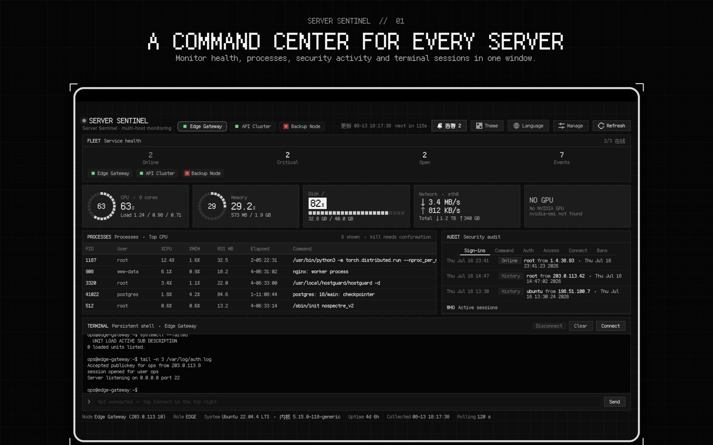

Monitor Linux and Mac servers
Track CPU, memory, disk, network, load, uptime, and host health across the servers you add.
Private SSH server monitoring for Mac
Server Sentinel brings Linux and macOS health, processes, alerts, trends, and a persistent SSH terminal into one native, local-first dashboard.
$3.99 USD one-time purchase · No subscription
Native macOS dashboard

Server monitoring and administration
Track CPU, memory, disk, network, load, uptime, and host health across the servers you add.
Inspect processes, review alerts and recent trends, and keep local operational history in one place.
Use password or private-key authentication, pin host public keys, and open a persistent remote terminal.
No Server Sentinel account, developer backend, advertising, analytics, crash reporting, or tracking.
Private by design
Credentials stay in the device Keychain. Monitoring and terminal history stay in the local app container. Server Sentinel connects only to hosts and optional Agent Relays you configure.
Frequently asked questions
Server health, CPU, memory, disk, network, load, uptime, processes, alerts, and recent trends over SSH.
No account or developer-operated cloud is required. Direct SSH works without installing an agent. An optional HTTPS Agent Relay can be self-hosted.
Passwords, private keys, and Agent Relay tokens are stored in the local device Keychain and are not uploaded to the developer.
No. It is a one-time purchase. The United States App Store price is $3.99; regional prices may vary.
Read the practical guide: How to monitor a Linux server from Mac over SSH →
Available now
Server Sentinel is available on the Mac App Store.